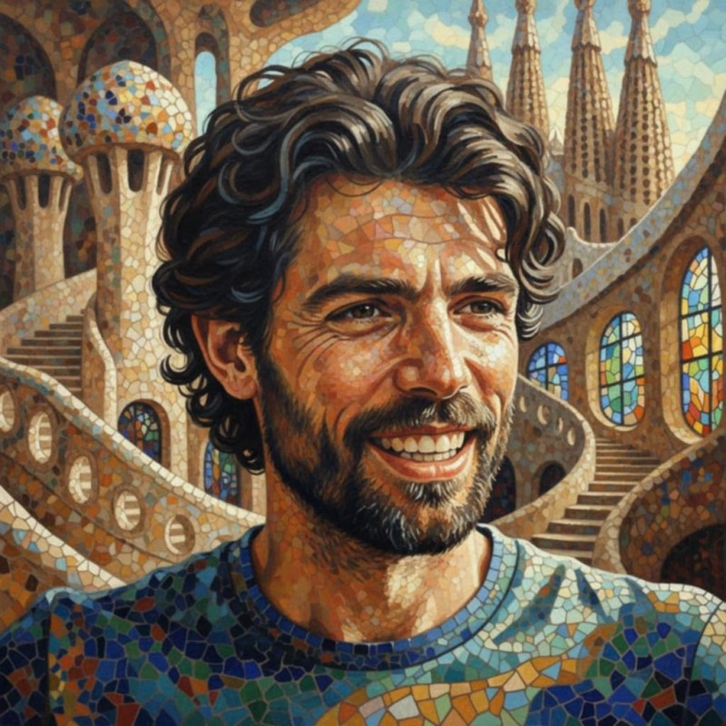
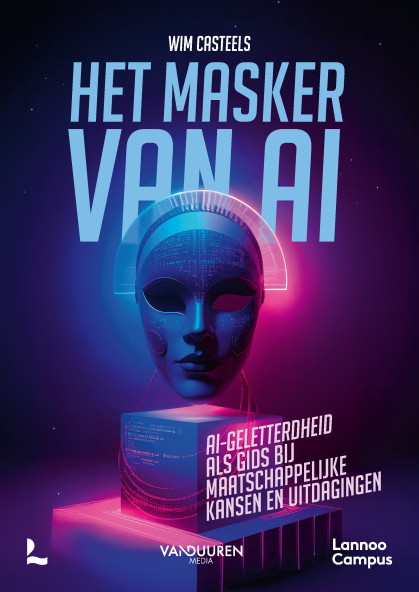

Netwerkmoment Stad Antwerpen · 12/6 · 14u30 - 15u30
AI-vaardigheid voor digihelpers
Geen trucjes om te prompten, wel een manier van denken.

Wim Casteels
Docent en onderzoeker IT & AI aan de AP Hogeschool.
Auteur van Het masker van AI (Lannoo Campus), over AI-geletterdheid als gids bij maatschappelijke kansen en uitdagingen.

Het kader
Wat is AI-vaardigheid?
AI-vaardigheid is leren om effectief, efficiënt, ethisch en veilig samen te werken met AI-systemen.
Het gaat niet om technische trucs of perfecte prompts, maar om een manier van denken: bewust kiezen wanneer je AI inzet, helder communiceren, kritisch beoordelen en eerlijk verantwoorden. Vandaag vatten we dat samen in vier V's.
Het kader is ontwikkeld door prof. Rick Dakan (Ringling College of Art and Design) en prof. Joseph Feller (University College Cork), vanuit hun onderzoek naar goed samenwerken met AI.
Meer lezen: aifluencyframework.org.
Even proberen
Waarom dit ertoe doet
Stel: je vraagt AI om een handleiding te schrijven. Je typt het eerste wat in je opkomt.
De vage vraag
Schrijf een handleiding om de Itsme-app te installeren.
Vraag aan de zaal: wat ontbreekt hier, waarom is dit nog niet bruikbaar?
Precies die ontbrekende dingen vormen samen het kader van vandaag: de 4 V's.
Naar beneden voor wat de AI antwoordt
Op het eerste gezicht ziet dit er prima uit:
Antwoord van de AI
Itsme installeren
Stap voor stap, voor Android (Google Play) en iPhone (App Store).
1. App downloaden
Open de Google Play Store (Android) of App Store (iPhone), zoek op itsme en tik op Installeren. Open daarna de app.
2. Telefoonnummer invoeren
Geef je Belgische gsm-nummer op. Je krijgt een sms met een verificatiecode die je in de app invoert.
3. Identiteit bevestigen
Kies één van de manieren om je account te activeren:
Met je bankkaart en kaartlezer (digipass) van je bank
Met je bank-app, als je bank dit ondersteunt
Met je eID (elektronische identiteitskaart) en een nfc-toestel of kaartlezer
Volg de instructies op het scherm. Je geeft je gegevens in en bevestigt met je pincode of bankcode.
4. Itsme-code instellen
Kies een persoonlijke 5-cijferige itsme-code. Met deze code (of vingerafdruk/gezichtsherkenning) bevestig je voortaan al je acties.
5. Klaar
Je itsme is geactiveerd. Je kan nu inloggen bij overheidsdiensten, banken, verzekeraars en andere websites die itsme ondersteunen.
Maar kijk nog eens met de ogen van wie jij helpt. Het kiest geen toestel, gooit drie activatiemanieren tegelijk op tafel, en gebruikt woorden als nfc en digipass zonder uitleg. Voor iemand met weinig ervaring is dit nog te veel. En: klopt elke stap wel echt?
Vier vragen
De vier V's
Geen strak stappenplan, maar een manier van werken. Vier vragen die je jezelf stelt zodra je AI inschakelt.
Verdelen
Wanneer schakel je AI in, en wanneer niet?
Verwoorden
Hoe communiceer je helder en gericht met AI?
Verifieren
Hoe beoordeel je kritisch wat AI oplevert?
Verantwoorden
Hoe gebruik je AI verantwoordelijk en transparant?
De vier hangen samen. Vandaag kaderen we ze alle vier kort, en oefenen we hands-on op de twee in het midden:
Verwoorden en Verifieren.
Wanneer wel, wanneer niet
Verdelen
AI inschakelen is zelf een beslissing. Sommige taken geef je gerust uit handen, andere nooit.
In duo's, 2 minuten
Noem een taak die je wel aan AI zou geven, en een die je nooit zou uitbesteden. Waarom?
Open kaart spelen
Verantwoorden
Gebruik je AI, wees daar dan transparant over. Eerlijkheid en controle horen erbij.
"Als ik AI gebruik om een handleiding te maken, moet ik dat zeggen tegen de persoon die ik help."
Eens of oneens? Een kort gesprek over transparantie, eerlijkheid en controle.
Om mee te nemen: welke afspraak over AI-gebruik zou jij willen in jouw organisatie?
Eerste hands-on
Verwoorden
Een vage vraag geeft een vaag antwoord. Je rijkt je prompt aan met drie lagen.
Vb.: Stap voor stap, en stel mij eerst vragen voor je begint.
Laag 3, samenspel
Samenwerking
Welke context geef je mee?
Vb.: Ik ben digihelper, mijn doelgroep heeft weinig smartphone-ervaring.
Naar beneden voor de oefening en een voorbeeld
Verrijk de prompt
Vertrek van dezelfde vraag en bouw de drie lagen erin. Typ hem in en vergelijk met de eerste versie.
Vertrek hiervan
Schrijf een handleiding om de Itsme-app te installeren.
Verrijkt voorbeeldIk ben digihelper en help senioren met weinig smartphone-ervaring.Samenwerking (context)Schrijf een handleiding om de Itsme-app te installeren op een Android-telefoon.Max. 8 stappen, eenvoudige taal, korte zinnen, een handeling per stap.ResultaatStel mij eerst twee vragen als er iets onduidelijk is voor je begint.Aanpak
Tweede hands-on
Verifieren: de foutenjacht
Wat je vooraf beschrijft, controleer je achteraf. Dezelfde drie lagen, nu als controle.
Resultaat
Klopt elke stap?
Bestaat die knop met die naam echt? Is er niets verzonnen?
Aanpak
Logische volgorde?
Is er een stap overgeslagen of omgedraaid?
Samenwerking
Veel bijsturen?
Kreeg je te veel of te weinig? Moest je vaak corrigeren?
Jaag op de fouten
Neem de handleiding die jullie AI net maakte. Markeer concreet wat fout of verzonnen is, op de drie niveaus hierboven.
Let op: juist bij concrete, app-specifieke stappen (een knop in de Itsme-app, een procedure aan het stadsloket) verzint AI vaak plausibel klinkende onzin. Die exacte knopnamen en schermen kent het model niet, dus het gokt ernaar. Er valt gegarandeerd iets te vinden: vergelijk elke knopnaam met wat echt op het scherm staat.
Het hart van goed samenwerken
De lus: Verwoorden en Verifieren
AI is een gesprek, geen commando. Je verbetert je prompt op basis van wat je net vond, en draait opnieuw in hetzelfde chatvenster.
Niet opnieuw beginnen, maar verderwerken. De AI neemt de eerdere context mee, en het resultaat wordt ronde na ronde beter.
Naar beneden: zo bouwt een gesprek zich op
Zo bouwt een gesprek zich op
Jij
Schrijf een handleiding om de Itsme-app te installeren.
AI
Hier is een algemene handleiding in 5 stappen. (vaag, en stap 3 verwijst naar een knop die niet bestaat)
Jij
Mijn doelgroep zijn senioren met een Android-toestel. Max. 8 stappen, een handeling per stap. En "Volg de stappen op het scherm" bestaat niet, wat staat er echt?
AI
Aangepast: concrete knopnamen per stap, eenvoudige taal. (scherper, maar mist het scannen van de identiteitskaart)
Jij
De stap met de eID-kaart ontbreekt. Voeg toe voor de pincode-stap.
AI
Volledige, kloppende handleiding in 7 stappen.
Het grotere zaadje: vandaag deden we een rondje. Het echte werk is het gesprek dat blijft doorlopen, hoe je samen met AI een gedeelde taal en aanpak opbouwt over meerdere gesprekken heen.
Afsluiting
Wat ga jij hier morgen mee doen?
Een zin per duo. Neem het mee naar je eigen begeleiding.
AI is een hulpmiddel dat je stuurt en controleert, niet andersom.
Goed met AI werken is geen technische truc, maar een manier van denken:
helder verdelen,
scherp verwoorden,
kritisch verifieren en
eerlijk verantwoorden.
Aan de slag, naslag
Het kaartje om mee te nemen
Een korte checklist per V, voor de volgende keer dat je met AI aan de slag gaat.
Verdelen
Is dit een taak voor AI, of niet?
Wat houd ik bewust zelf in handen?
Verwoorden
Resultaat: wat moet eruit komen?
Aanpak: hoe moet de AI werken?
Samenwerking: welke context geef ik mee?
Verifieren
Klopt elke stap echt? Niets verzonnen?
Is de volgorde logisch en volledig?
Moest ik veel bijsturen?
Verantwoorden
Ben ik open over mijn AI-gebruik?
Blijf ik zelf verantwoordelijk voor het resultaat?
Naar beneden voor een sjabloon om te hergebruiken
Voorbeeldprompt om te hergebruiken
Sjabloon
Ik ben [rol] en help [doelgroep en niveau].
Schrijf [wat] voor [toestel of context].
Eisen: [lengte, taal, vorm, bijvoorbeeld max. 8 stappen, korte zinnen, een handeling per stap].
Stel mij eerst vragen als iets onduidelijk is voor je begint.
En na het antwoord: jaag op de fouten. Klopt elke stap, elke knopnaam? Verbeter je prompt en draai opnieuw in dezelfde chat.
Deze slides blijven beschikbaar als naslagwerk.
Bedankt
AI-vaardigheid voor digihelpers, een workshop van Wim Casteels.
Netwerkmoment Stad Antwerpen. Gebaseerd op het AI Fluency Framework, de 4 V's.
Geen trucjes om te prompten, wel een manier van denken.